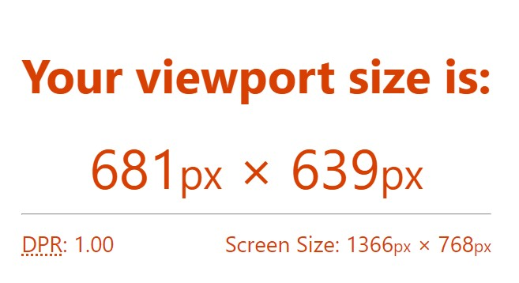

Device Pixel Ratio es el ratio entre els píxels físics i els píxels CSS.
Són els píxels reals qu eestan a una pantalla. Per exemple, quan es parla de 1920x1080, vol dir que és una pantalla de 1920 píxels físics d'amplada i 1080 píxels d'alçada.
És la unitat de mesura amb la que traballa CSS. No sempre són del la mateixa mida que un píxel físic.
